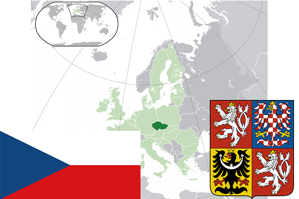

To`liq nomi: Chexiya Respublikasi
Region: Markaziy Yevropa
Qonunchilik shakli: Respublika
Mustaqillik kuni : 1-yanvar 1993-yil (Chexoslovakiya Federativ Respublikasidan)
Poytaxt: Praga
Maydoni: 78 866 km² (dunyoda 115 -o`rinda )
Chegaradosh davlatlari: Germaniya, Polsha, Slovakiya, Avstriya
Aholisi: 10 538 275 (dunyoda 84 -o`rinda, 2015 -yil roʻyxat)
Aholi zichligi: 133 /km²
Aholining o`rtacha yoshi: 76,5 yil ( 79,9 ayollar, 73,1 erkaklar)
Rasmiy tili: Chex tili
Dini: Katolik
Pul birligi: Chexiya kronasi
Telefon prefiksi: +420
Internet domen: .cz
Xalqaro tashkilotlarga a`zoligi: BMT (1993– yildan), Yevropa Ittifoqi (2004-yildan), Shimoliy Atlantika Shartnomasi tashkiloti (1999-yildan)
Dengiz va okeanlarga chiqishi: Yo`q
YIM: Butun: $ 180,789 mlrd, Jon boshiga: $ 17 850 (2015 - yil roʻyxati)
Yirik shaharlari: Praga, Brno, Ostrava, Plzen